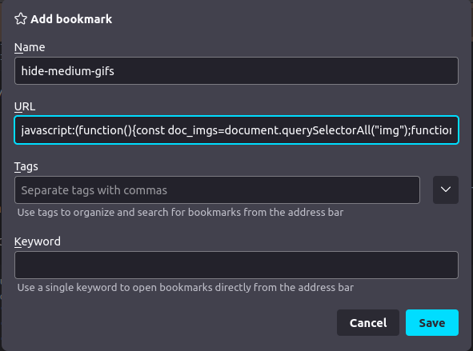

Remova os gifs do medium
A plataforma medium tem muito conteúdo bom, mas infelizmente muitas postagens ótimas são permeadas de gifs super coloridos, que eu considero distrativos.
Quando eu tô procurando direcionamento sobre um tópico, e finalmente acho um post sobre o assunto, eu não gosto muito da mudança de tom que os gifs trazem, inseridos a cada parágrafo, tipo um comic relief desnecessário (ahem).
Daí esse snippet esconde todos os gifs e põe um botãozinho pra mostrar/esconder, aí você pode dar uma olhada e desligar a coisa.

Você pode ir "Add Bookmarks" e adicionar o seguinte, com um nome tipo "hide-medium-gifs":
javascript:(function() {const doc_imgs=document.querySelectorAll('img');function toggleImgVisibility(e){let prevSibling=e.target.previousElementSibling;while(prevSibling){if(prevSibling.classList.contains('hidden-g0f')){if(prevSibling.style.visibility=='hidden'){prevSibling.style.visibility='visible';}else{prevSibling.style.visibility='hidden';}break;}prevSibling=prevSibling.previousElementSibling;}}function createToggleBtn(){const button=document.createElement("BUTTON");button.innerText="Toggle gif visibility";button.addEventListener("click",toggleImgVisibility);return button;}doc_imgs.forEach((img) => {if (!img.src.includes('.gif')) return;img.classList.add("hidden-g0f");img.style.visibility = "hidden";img.parentElement.appendChild(createToggleBtn());});}())
Daí, em qualquer página do medium (por exemplo...), basta clicar no favorito criado, e pronto: gifs pausáveis.
Abaixo eu explico melhor a função.
Tags: bookmarklet
Sempre pode suas redes
Sério, sempre pode suas redes. Docker networks abandonadas, desligadas de qualquer container podem destruir sua internet.
Eu fiquei duas semanas com problema na internet da minha máquina: por algum motivo, na rede de casa, a conexão do ubuntu ficava falhando.
Hora penava pra resolver DNSs, hora parava de funcionar completamente. Mas às vezes (geralmente quando eu pedia ajuda) ela funcionava.
Tentei desabilitar o IPV6 nas configurações de rede, desinstalar o systemd-resolved, mexer com o network manager, editar o /etc/resolv.conf diretamente.
Nada.
Em outras redes, na casa de amigos, na cafeteria, a internet funcionava. Eu cheguei a achar que meu provedor estava de sacanagem.
Até que tive que ficar num airBnb, e o problema voltou.
Olhei pro roteador, e era o mesmo d-link que eu tinha em casa. Já comecei a desenvolver uma crendice.
Acabou que não pude ir até o fim, pois um dia rodei um docker network ls e notei que tinha muita coisa na listagem.
docker network prune
>Yes
E problema resolvido.
Se alguém souber mais sobre isso, ou como reproduzir o problema, por favor, entre em contato.
Mas lembre-se: sempre pode suas redes.
Tags: docker, dns, networking
Making home of the WSL 2
Having recently migrated from Ubuntu to Windows as my work machine, many of the features that made my system feel like home were missing.
This post serves as a collection of solutions I found (and some I've adapted) from the web. Cheers!
House cleaning com git
Nesse post eu quero compartilhar com vocês algumas operações que eu tive que realizar em uns repositórios antigos, que estavam mal gerenciados e abandonados, pra que eu pudesse voltar a desenvolver neles.
As coisas que eu precisei aprender a fazer foram as seguintes:
- Listar autores de um repositório
- Filtrar os commits do repositório por autor, pra ver o que cada um contribuiu
- Relacionar combinações de autores/email diferentes de um mesmo usuário (usando o arquivo
.mailmap) - Em um commit, ver quais arquivos foram alterados
- Ver o que foi alterado em um arquivo específico dentro de um commit
- Verificar o histórico de alteração de um arquivo no repositório (git log arquivo.js)
- Alterar o nome e autor de alguns commits, utilizando o git-filter-repo
Essas tarefas são ótimas pra se familiarizar (ou relembrar) com o andamento de um projeto, ver o ritmo das alterações, quantas mudanças costumam ser embaladas num mesmo commit, e criar um feeling sobre o perfil dos desenvolvedores de um projeto.
Também servem pra organizar e arrumar o histórico e os meta dados dos commits passados, e por isso eu chamo de "House cleaning".
Tags: git
Busca sem backend - parte 1
mg;nl: Vamos ver como adicionar um mecanismo de busca em um site estático. Neste post vamos criar um script que gera um arquivo json contendo os conteúdos do site, juntando o título, sumário, tags e palavras chave geradas utilizando a ferramenta yake.
A barra de busca: essencial, mas de dificil implementação se você não tiver acesso a um banco de dados.
Em sites dinâmicos, no qual o conteúdo é resgatado de um banco de dados a cada acesso, você pode utilizar um formulário, que envia os valores digitados pelo usuário (termos de busca) a um endpoint que as utiliza para realizar uma consulta no banco de dados, e retorna os resultados para o usuário.
Em sites estáticos (como esse, que é hospedado no github pages), todo o conteúdo disponível para o usuário precisa ser previamente criado e hospedado. Ou seja, não temos como responder de forma dinâmica às combinações (praticamente infinitas) de palavras chave que um usuário pode buscar.
Para um site pequeno, porém, podemos estruturar o conteúdo em um formato de fácil consulta, como o json, e deixá-lo salvo no servidor.
Daí podemos receber os termos de busca digitados pelo usuário e usar algumas linhas de javascript para carregar o arquivo, aplicar o filtro, e retornar os resultados.
Neste primeiro post, vamos desenvolver um script em python que percorre as publicações do site e formata as informações essenciais em um formato facilmente consultável.
Tags: python, json, busca, nlp
Comparando json na linha de comando
mg;nl: vamos usar o vimdiff e o jq para comparar arquivos json independente da formatação.
Comparar arquivos json parecidos pode ser complicado. Muitas vezes os arquivos foram formatados com espaçamentos diferentes, ou a diferença não ocorre no mesmo nível hierarquico.
Vamos criar um script simples pra comparar arquivos json diretamente pelo terminal, usando o programa jq e o vimdiff.
Vamos ver também como preparar um script bash pra lidar com erros conhecidos, como arquivos com json inválido ou de outro formato.
Tags: json, vimdiff, cli, bash
A ordem dos exports importa
mg;nl: quando você utiliza um arquivo index.js para exportar módulos no react, a ordem dos exports pode quebrar seu app se dois módulos importam um ao outro, causando um Uncaught TypeError: _MyModule__WEBPACK_IMPORTED_MODULE_1__ is undefined.
O react tem uma funcionalidade muito boa, o absolute imports, que ajuda você a não precisar ficar lidando com o caminho relativo entre os arquivos.
Se seu app tem uma estrutura do tipo
- src/
- components/
- pages/
Você pode, num arquivo em src/pages/Home.jsx, importar módulos de duas formas
// bad! >:(
import { ButtonGroup } from '../components/ButtonGroup';
import { MyButton } from '../components/RadioGroup';
// good! >:)
import { ButtonGroup, MyButton } from 'components';
Basta você largar um arquivo jsconfig.json na raíz do seu projeto, passando o diretório src/ como baseUrl:
{
"compilerOptions": {
"baseUrl": "src"
},
"include": ["src"]
}
Porém existem algum gotchas quando você começa a agrupar seus exports.
Tags: react, javascript
Remova o feed do github
mg;nl: vamos criar um bookmarklet pra remover o feed da página inicial do github.
Se você é como eu, provavelmente já entrou no seguinte loop:
- Você fica com dúvida sobre um projeto hospedado no github
- Você acessa https://github.com.
- Você fica interessado no que as pessoas andaram fazendo, e acaba clicando em alguma coisa.
- Você mata a curiosidade e sai do github.
- ????
- Você lembra da dúvida sobre o projeto
- repeat
Vamos remover a distração da homepage do github usando um pouco de javascript.
Tags: bookmarklet, javascript